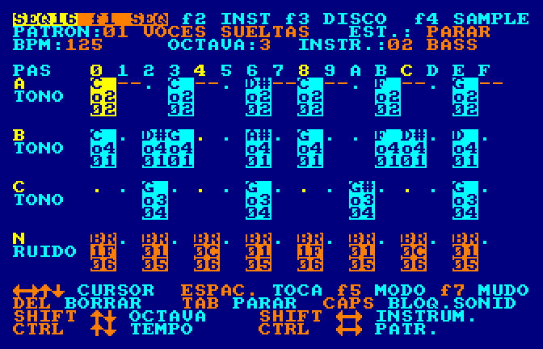
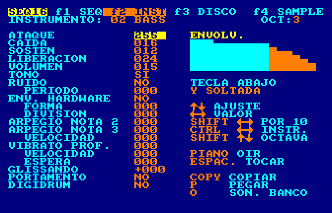
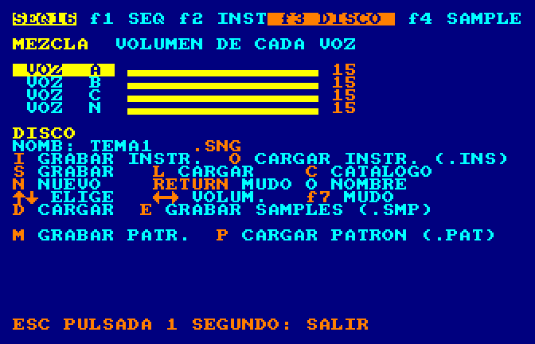
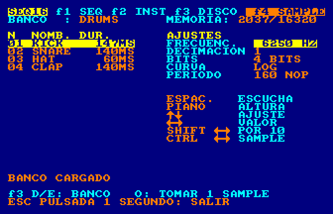

MANUAL DE USO
Manual de SEQ-16
Cada pantalla y cada tecla de SEQ-16, con los textos exactamente como los muestra el disquete en español (seq16-es.dsk).
Los textos en amarillo, como BLOQ.SONID, son los de la pantalla del CPC. Las teclas se dibujan como teclas de teclado: CTRL + ←/→ quiere decir: mantén CTRL y pulsa la flecha izquierda o derecha. El juego de caracteres del CPC no tiene acentos: los textos de la pantalla van sin tildes.
Arrancar y salir
- Mete
seq16-es.dsken la disquetera (o en un emulador configurado como CPC 6128). - Teclea
RUN"SEQ16y pulsa RETURN. - Elige una pantalla con las teclas de función del teclado numérico: f1 secuenciador, f2 instrumento, f3 mezcla y disco, f4 sampler. Las pestañas de arriba muestran f1 SEQ f2 INST f3 DISCO f4 SAMPLE.
Para salir, mantén ESC pulsada un segundo (ESC PULSADA 1 SEGUNDO: SALIR). Una pulsación sola no basta, para no perder tu trabajo por error.
Los sonidos por defecto se quedan dentro del programa: al arrancar y después de un tema nuevo, siempre tienes los mismos 32 instrumentos. Los instrumentos 25 a 28 (USER1 a USER4) están libres para tus propios sonidos; 29 a 32 son los digidrums de fábrica (DGKICK, DGSNAR, DGHAT, DGCLAP).
f1 · Secuenciador
Las líneas de arriba muestran el número de patrón (PATRON:) y el modo, VOCES SUELTAS o SONIDO 4 VOC., el estado (EST.: TOCAR o PARAR), el tempo (BPM:), la octava de entrada (OCTAVA:) y el instrumento de entrada (INSTR.:).
Debajo, los 16 pasos (PAS 0 a F) de las voces A TONO, B TONO, C TONO y N RUIDO: cada casilla tiene una nota, una octava y un instrumento. En el modo de sonido de 4 voces, una sola línea SON. 4 V. toca un sonido compuesto (SONIDO:) en las 4 voces a la vez.
Una voz silenciada muestra MUDO a la izquierda de la cuadrícula.

| Teclas | En pantalla | Efecto |
|---|---|---|
| ←/→ ↑/↓ | CURSOR | mover el cursor; se oye la nota a la que llegas |
| Teclas del piano | poner una nota, oírla, pasar al paso siguiente | |
| DEL | BORRAR | borrar la casilla |
| TAB (o CLR) | PARAR | corte de nota (--) |
| CAPS LOCK | BLOQ.SONID | bloquear el instrumento de entrada |
| ESPACIO | TOCA | tocar / parar |
| f5 | MODO | voces sueltas / sonido de 4 voces |
| f7 | MUDO | silenciar (o volver a oír) la voz del cursor |
| SHIFT + ↑/↓ | OCTAVA | octava de entrada |
| SHIFT + ←/→ | INSTRUM. | instrumento de entrada (y el de la nota bajo el cursor) |
| CTRL + ↑/↓ | TEMPO | tempo en BPM |
| CTRL + ←/→ | PATR. | patrón anterior / siguiente (32 patrones) |
f2 · Instrumento
El número y el nombre del instrumento (INSTRUMENTO:), la octava de prueba (OCT:), la lista de ajustes a la izquierda y el dibujo de la envolvente (ENVOLV.) a la derecha (TECLA ABAJO, Y SOLTADA). El dibujo se actualiza con cada cambio de ataque, caída, sostén o liberación.

| Teclas | En pantalla | Efecto |
|---|---|---|
| ↑/↓ | AJUSTE | elegir un ajuste |
| ←/→ | VALOR | cambiar su valor |
| SHIFT + ←/→ | POR 10 | cambiar el valor de 10 en 10 |
| CTRL + ←/→ | INSTR. | instrumento anterior / siguiente (32 instrumentos) |
| SHIFT + ↑/↓ | OCTAVA | octava de prueba |
| Teclas del piano | PIANO OIR | probar el instrumento |
| ESPACIO | TOCAR | escuchar el patrón con el sonido modificado |
| COPY | COPIAR | copiar el instrumento (ajustes y nombre) |
| P | PEGAR | pegar: el instrumento copiado sustituye al que está en pantalla |
| O | SON. BANCO | tomar un sonido de un banco .INS del disquete: eliges el banco y luego uno de sus 32 sonidos (flechas, RETURN; ESC cancela) |
Los ajustes
Un ajuste sangrado depende de la línea de encima (el periodo del ruido, la forma y la división de la envolvente hardware, la velocidad del arpegio, la velocidad y la espera del vibrato).
| Ajuste | Valores |
|---|---|
| ATAQUE | 0 a 255 |
| CAIDA | 0 a 255 |
| SOSTEN | 0 a 15 |
| LIBERACION | 0 a 255 |
| VOLUMEN | 0 a 15 |
| TONO | SI / NO |
| RUIDO | SI / NO |
| PERIODO | 0 a 31 |
| ENV. HARDWARE | SI / NO |
| FORMA | 8 a 15 |
| DIVISION | 0 a 7 |
| ARPEGIO NOTA 2 | 0 a 24 |
| ARPEGIO NOTA 3 | 0 a 24 |
| VELOCIDAD | 1 a 15 |
| VIBRATO PROF. | 0 a 6 |
| VELOCIDAD | 0 a 255 |
| ESPERA | 0 a 255 |
| GLISSANDO | valor con signo (+000) |
| PORTAMENTO | SI / NO |
| DIGIDRUM | SI / NO: ver Digidrums |
Copiar un sonido en otro instrumento: elige el instrumento de origen (CTRL + ←/→), pulsa COPY, ve al instrumento de destino y pulsa P.
El ajuste DIGIDRUM (el último): en SI, el instrumento toca un sample en vez de una nota. La línea PERIODO pasa entonces a SAMPLE seguida del nombre del sample: su valor es el número del sample en el banco (0 = el primero).
f3 · Mezcla y disco
Arriba, MEZCLA VOLUMEN DE CADA VOZ: una barra por voz (VOZ A, B, C, N). Abajo, DISCO: la línea del nombre de fichero NOMB: (por defecto TEMA1) y los comandos del disquete.

| Teclas | En pantalla | Efecto |
|---|---|---|
| ↑/↓ | ELIGE | elegir una voz (A, B, C, N) o el nombre de fichero |
| ←/→ | VOLUM. | volumen de la voz (0 a 15) |
| RETURN o f7 | MUDO O NOMBRE, MUDO | mudo / audible (en la línea del nombre: escribir el nombre) |
| S | GRABAR | grabar el tema |
| L | CARGAR | cargar el tema |
| C | CATALOGO | mostrar el catálogo del disquete |
| I | GRABAR INSTR. | grabar los instrumentos: los 32 instrumentos y los 8 sonidos compuestos, en NOMBRE.INS |
| O | CARGAR INSTR. (.INS) | cargar un banco de instrumentos .INS (flechas y luego RETURN; ESC cancela). Los patrones no cambian |
| D | CARGAR | elegir un banco de samples .SMP del disquete (para la pantalla f4): flechas y luego RETURN; ESC cancela |
| E | GRABAR SAMPLES (.SMP) | grabar el banco de samples (con los ajustes hechos en f4), con su nombre: DRUMS.SMP… |
| M | GRABAR PATR. | grabar el patrón mostrado (el de f1), solo, en NOMBRE.PAT: su modo, su tempo y sus 16 pasos |
| P | CARGAR PATRON (.PAT) | cargar un patrón .PAT del disquete en lugar del patrón mostrado: la lista muestra todos los ficheros en páginas de 24 (flechas, RETURN; ESC cancela) |
| N | NUEVO | tema nuevo (pulsar dos veces) |
| ESPACIO | escuchar el patrón mientras ajustas |
El nombre de fichero: baja a la línea NOMB:, pulsa RETURN (NOMBRE, LUEGO RETURN), escribe el nombre (8 letras o cifras como máximo) y luego RETURN. La primera letra que tecleas sustituye al nombre anterior; DEL corrige. La extensión .SNG se añade sola.
El volumen de las voces: el chip de sonido del CPC manda el canal A a la izquierda, el canal C a la derecha y el canal B a los dos lados. Según cómo escuches (altavoz interno, un solo auricular, un amplificador conectado a una sola salida), un canal puede parecer más fuerte que los demás: aquí lo equilibras, y el ajuste se graba con el tema.
f4 · Sampler (Sample Composer)

El banco de sonidos a la izquierda (BANCO :, MEMORIA:, luego N NOMB. DUR.), los AJUSTES del sonido elegido a la derecha. La primera vez que abres f4, el banco DRUMS.SMP se carga solo (CARGANDO DRUMS.SMP...). El sample elegido aparece en amarillo invertido.
| Teclas | En pantalla | Efecto |
|---|---|---|
| ESPACIO | ESCUCHA | escuchar el sample elegido (ESPACIO otra vez: parar) |
| Teclas del piano | PIANO ALTURA | escuchar el sample más agudo o más grave (±12 semitonos). La fila de arriba, a partir de la tecla del DO, toca la altura original y sube de semitono en semitono; la fila de abajo toca una octava más baja |
| ↑/↓ | AJUSTE | elegir un ajuste: frecuencia, decimación, bits, curva |
| ←/→ | VALOR | cambiar su valor |
| SHIFT + ←/→ | POR 10 | cambiar la frecuencia de 10 en 10 |
| CTRL + ←/→ | SAMPLE | sample anterior / siguiente |
| O | O: TOMAR 1 SAMPLE | tomar un sample de otro banco .SMP: se añade al final del banco en memoria (16 samples y 16 KB como máximo) |
| f3 y luego D / E | f3 D/E: BANCO | cambiar de banco / grabar el banco (ajustes y samples añadidos incluidos) |
Los ajustes son los de la ficha del sample, en memoria. No tocan los datos.
| Ajuste | Valores | Efecto |
|---|---|---|
| FRECUENC. | 4000 a 16 129 Hz | la altura y el brillo; más baja, más sucio. → sube, ← baja |
| DECIMACION | 1, 2, 3, 4, 6, 8 | una muestra de cada N, mantenida N veces: aliasing marcado |
| BITS | 4, 3, 2, 1 | menos niveles. Con 1 bit solo quedan los niveles 0 y 8: un «bip» duro y débil |
| CURVA | LINEAL, LOG, SATURADA, PLEGADA, INVERSA | una tabla de 16 valores entre el sample y el volumen (abajo) |
| PERIODO | (información) | la duración de una muestra en µs, es decir, en NOP |
- LOG es el resultado fiel, el de los WAV de escucha.
- LINEAL trata cada valor como una amplitud lineal, escrita tal cual en el AY, que en cambio es logarítmico. El sonido es más hueco y distorsionado.
- SATURADA multiplica la señal por 2,5 y la recorta.
- PLEGADA también multiplica por 2,5 y luego pliega lo que se pasa.
- INVERSA da la vuelta a la forma de onda.
Mientras suena un sample, la pantalla no responde (SONANDO (ESPACIO: PARAR)): el procesador no hace otra cosa que tocar el sample, con las interrupciones cortadas. Los demás canales del AY siguen sonando con sus últimos ajustes. Si el patrón estaba sonando, sus envolventes, arpegios y vibratos se congelan hasta el final del sample. Es a propósito.
Temas: grabar y cargar
Un fichero .SNG (unos 9 KB) contiene todo el tema:
- los 32 patrones;
- los 32 instrumentos y sus nombres;
- los 8 sonidos compuestos;
- los volúmenes y las voces silenciadas;
- el nombre del banco de samples usado (formato versión 2).
- En f3, baja a NOMB:, pulsa RETURN, escribe el nombre y luego RETURN.
- S graba el tema (GRABANDO... y luego TEMA GRABADO). Si ya existe un fichero con el mismo nombre, AMSDOS guarda el antiguo con la extensión
.BAK. - Para cargar: escribe el nombre del mismo modo y pulsa L (TEMA CARGADO). C muestra el catálogo si has olvidado el nombre.
Al cargar un tema versión 2, su banco de samples se vuelve a cargar si no es el que está en memoria (TEMA Y BANCO DE SAMPLES CARGADOS). Si no está en el disquete, el tema se carga igualmente (TEMA CARGADO (FALTA EL .SMP)). Los temas del formato antiguo (versión 1, grabados antes de los digidrums) se siguen cargando.
Los mensajes
| Mensaje | Significado |
|---|---|
| PRIMERO UN NOMBRE (RETURN) | la línea NOMB: está vacía |
| ERROR DE DISCO (DISCO? NOMBRE?) | no hay disquete, o no hay fichero con ese nombre |
| ESTE FICHERO NO ES UN TEMA SEQ-16 | el fichero no es un .SNG de SEQ-16 |
| N OTRA VEZ: BORRAR TODO? | pulsa otra vez N para empezar un tema nuevo (TEMA NUEVO) |
| INSTRUMENTOS GRABADOS / INSTRUM. CARGADOS | después de I / O en f3 |
| BANCO DE SAMPLES GRABADO | después de E en f3 |
| FLECHAS Y RETURN (ESC: CANCELAR) | hay una lista de ficheros abierta: elige con las flechas |
| NINGUN FICHERO DE ESTE TIPO EN EL DISCO | no se encuentra ningún fichero .INS o .SMP |
| SIN BANCO: f3 Y LUEGO D | f4 no tiene ningún banco en memoria |
| BANCO DEMASIADO GRANDE | el banco .SMP no cabe en memoria |
| BANCO LLENO (16 SAMPLES) | O en f4: el banco está lleno |
Los bancos de sonidos
Los bancos del disquete se suman a los sonidos por defecto del programa. Los nombres de los bancos son nombres de fichero en francés, iguales en todas las versiones.
Bancos de instrumentos .INS (13 bancos, 416 sonidos)
Un banco .INS contiene 32 instrumentos, sus nombres y 8 sonidos compuestos (848 bytes). Puedes:
- cargar un banco entero: pantalla f3, tecla O, flechas, RETURN;
- tomar un solo sonido para el instrumento en pantalla: pantalla f2, tecla O, y luego eliges el banco y el sonido;
- grabar tus propios instrumentos: pantalla f3, tecla I (fichero
NOMBRE.INS, con el nombre de la línea NOMB:).
| Banco | Contenido |
|---|---|
USINE (fábrica) | los 32 instrumentos por defecto del programa (para recuperarlos después de cargar otro banco) |
BATTERIE (batería) | bombos, cajas, charles, toms, platillos, cencerro, claves |
BASSES (bajos) | bajos cortos, largos, deslizados, «buzzer», sucios, wobble |
LEADS | sonidos de melodía: vibratos, portamentos, sync, trinos |
NAPPES (colchones) | colchones lentos, acordes sostenidos, coros, órganos |
ARPEGES (arpegios) | acordes arpegiados a 3 velocidades: mayor, menor, 7.ª, sus, disminuido… |
EFFETS (efectos) | láseres, sirenas, monedas, saltos, explosiones, motores |
BUZZER | la envolvente hardware del AY: 4 formas × 3 divisiones, y variantes |
CLAVIERS (teclados) | pianos, cuerdas pulsadas, campanas, órganos, vientos |
CHIPTUNE | un banco completo para una música de videojuego |
PERCUS | congas, bongos, claves, triángulo, tablas, gong |
GLISSES (deslizados) | portamentos, glissandos hacia arriba o hacia abajo |
BRUITS (ruidos) | ruido sostenido a 10 alturas, viento, lluvia, mar, tren |
Bancos de samples .SMP (9 bancos)
DRUMS.SMP es el banco por defecto: se carga solo la primera vez que abres f4. Para usar otro: pantalla f3, tecla D, elige el banco con las flechas, RETURN y luego f4. En f4, la tecla O toma un solo sample de otro banco y lo añade al banco en memoria; f3 + E graba el resultado.
| Banco | Contenido | Tamaño |
|---|---|---|
DRUMS | KICK, SNARE, HAT, CLAP (los digidrums de fábrica) | 2 KB |
VOIX (voces) | «bonjour», «Amstrad», «SEQ 16», «1, 2, 3, 4» (en francés) | 13 KB |
BATTERI2 | batería estilo caja de ritmos: bombo largo, toms, cencerro, crash… (12 sonidos) | 12 KB |
PERCUS | congas, bongo, claves, triángulo, pandereta, agogó, tabla… (12 sonidos) | 13 KB |
EFFETS (efectos) | láser, zap, explosión, moneda, salto, sirena, alarma, ovni… (12 sonidos) | 14 KB |
BASSES (bajos) | 10 notas de bajo (DO), para tocar con el piano de f4 | 15 KB |
NOTES (notas) | pulsado, piano, campana, órgano, metal, coro, orquesta… (10 notas, DO) | 14 KB |
CHIFFRES (cifras) | «zéro» a «dix» (cero a diez, en francés) | 11 KB |
MOTS (palabras) | «allez», «oui», «non», «encore», «stop», «bravo», «CPC»… (14 palabras en francés) | 16 KB |
Todos los sonidos están sintetizados o los dice espeak: ninguna muestra sacada de Internet, así que ningún problema de derechos. Los bancos están también en los disquetes de datos seq16-inst.dsk (.INS) y seq16-samples.dsk (.SMP).
Los samples, paso a paso
El CPC no tiene convertidor digital-analógico. Toca un sample cambiando muy deprisa el volumen de un canal del AY: 16 niveles en una curva casi logarítmica. Eso es lo que da el grano, y se busca la degradación: grano, aliasing, soplido y entrecortes son efectos queridos y ajustables.
- Arrancar. Mete
seq16-es.dsky tecleaRUN"SEQ16. - Abrir la pantalla de los samples. Pulsa f4, la tecla 4 del teclado numérico. La primera vez, el banco
DRUMS.SMPse carga solo y sus 4 sonidos aparecen a la izquierda. - Escuchar. Elige un sample con CTRL + ←/→. ESPACIO lo toca a su altura original; ESPACIO otra vez lo para. Las teclas del piano lo tocan más agudo o más grave: la fila de arriba, a partir de la tecla del DO, empieza en la altura original y sube de semitono en semitono; la fila de abajo toca una octava más baja. Mientras suena, la pantalla se queda quieta: es normal.
- Ensuciar el sonido. A la derecha, elige un ajuste con ↑/↓ y cambia su valor con ←/→ (para la frecuencia, con SHIFT, de 10 en 10). Vuelve a escuchar después de cada cambio.
- FRECUENC.: más baja, más grave y más sucio.
- DECIMACION: de 2 a 8, aparecen silbidos metálicos.
- BITS: de 3 a 1, el sonido se vuelve cada vez más «bip».
- CURVA: SATURADA, PLEGADA, LINEAL e INVERSA deforman el sonido; LOG es el sonido original.
- Cambiar de banco. Ve a f3 y pulsa D. La lista de ficheros
.SMPdel disquete aparece abajo: elige con las flechas, RETURN carga el banco, ESC cancela. Vuelve a f4. (El campo NOMB: de f3 solo sirve para los temas.SNG.) - Añadir un sample de otro banco. En f4, pulsa O, elige el banco y el sample: se añade al final del banco en memoria (SAMPLE ANADIDO AL BANCO).
- Grabar el banco. f3 y luego E: el banco se graba con su nombre, con los ajustes hechos en f4 y los samples añadidos.
- Fabricar tus propios sonidos en el PC a partir de ficheros WAV, con la pestaña SAMPLES SEQ-16 de CPC DISK o
tools/wav2smp.py.
Conviene saber
- Un banco ocupa 16 KB como máximo, o sea unos 4 segundos a 8 kHz, o 5 segundos a 6,25 kHz. Un banco contiene 16 sonidos como máximo.
- Si el patrón estaba sonando durante una escucha, se congela mientras dura el sample y luego sigue.
- ¿Quieres oírlo ya?
VOIX: f3, D, elige VOIX, RETURN y luego f4. Con BITS 2 o con la curva SATURADA, la voz se vuelve un robot muy sucio.
Los digidrums: samples dentro del tema
Un digidrum es un instrumento que toca un sample del banco cargado en vez de una nota. Los 4 instrumentos de fábrica 29 a 32 (DGKICK, DGSNAR, DGHAT, DGCLAP) tocan los 4 sonidos de DRUMS.SMP.
Hacer uno tú mismo, en la pantalla f2
- Pon el último ajuste, DIGIDRUM, en SI.
- La línea PERIODO pasa a SAMPLE y muestra el nombre del sample. Cambia su valor con ←/→: 0 = el primer sample del banco, 1 = el segundo…
- VOLUMEN ajusta la fuerza del sample (15 = a tope; por debajo, más suave). Los demás ajustes no se usan.
- Pruébalo con el piano: el sample suena enseguida.
En el secuenciador
Pon el digidrum como una nota:
- la altura: la nota DO de la octava 4 (fila de arriba del piano, octava de entrada 3) toca el sample tal cual; cada semitono por encima o por debajo lo hace más agudo o más grave, hasta ±12 semitonos;
- la voz elige el canal del AY: A, B o C. En la voz N (ruido), el sample suena en el canal C, a su altura original;
- una voz silenciada (f7) no toca sus digidrums.
El modo BLOQUEANTE. El sample suena entero al final de la imagen, con las interrupciones cortadas. Después, el secuenciador recupera el tempo: avanza tantas imágenes como ha durado el sample, para que los pasos siguientes caigan a tiempo. Durante el sample, la pantalla y el teclado dejan de responder; las otras voces siguen sonando, pero sus envolventes, arpegios y vibratos se congelan. Esta congelación forma parte del sonido.
Mantén los digidrums cortos: menos de 150 ms (los 4 sonidos de DRUMS.SMP lo son). Un sample más largo hace «tartamudear» la interfaz y las otras voces.
Límites conocidos
- La memoria está llena. Si f4 muestra MEMORIA INSUFICIENTE, los samples, los digidrums y la tecla O de f2 se desactivan; el resto funciona.
- Los bancos de samples deben caber en los 16 064 bytes de la memoria principal (unos 4 segundos a 8 kHz); 16 samples como máximo.
- La lista de bancos (f3 y luego D) solo funciona en la unidad A.
- Los bancos de instrumentos se leen byte a byte: está probado en el simulador, todavía no en la máquina real.
- La recuperación del tempo después de un digidrum se calcula a partir de la duración teórica del sample: en 32 compases todavía puede haber una pequeña deriva.
- Un «toc» al principio o al final de un sample es posible, cuando el volumen pasa del ajuste del motor a la primera muestra.
- Por encima de unos 6 kHz, la comprobación de la tecla ESPACIO alarga una muestra de cada 256: puede haber un chisporroteo muy leve.
Todavía no
- edición de los sonidos compuestos en pantalla;
- encadenar los patrones en un tema;
- renombrar los instrumentos;
- copiar y pegar bloques;
- samples: memoria adicional del 6128, modo TROCEADO, acabados de f4 (forma de onda, recorte, bucle).
Las notas técnicas completas están en el README del repositorio.